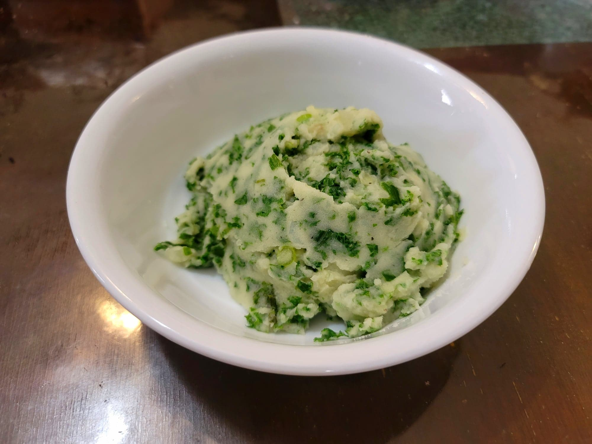

Colcannon

Ingredients:
- 22 oz Russet potatoes, peeled and cubed
- 4 oz Curly kale
- 2 Scallions, roughly chopped
- 1/2 cup Butter
- 1 Scallion, finely sliced
- Salt, to taste
- Black pepper, to taste
Instructions:
- Place the potatoes into a pot of lightly salted water. Bring to a boil and let cook until fork tender, 10-15 minutes.
- In a separate pot, bring some water to a boil. Once boiling, blanch the kale for about 1 minute. Then strain and let cool.
- Place the kale and 2 scallions into a food processor. Pulse for a few seconds until it becomes roughly minced. (You want there to still be texture.)
- Drain the potatoes and place them back into the pot. Add the butter and mash until smooth. Then stir in the processed vegetables and the sliced scallions. Season with salt and pepper to taste.
- Serve immediately, optionally with extra butter.